Second life collection
Moda rigenerata con metodo industriale e cura artigianale
Re-Love integra selezione, sanificazione, restyling e rivendita in un unico flusso controllato.
Second life collection
Re-Love integra selezione, sanificazione, restyling e rivendita in un unico flusso controllato.
Canale fisico
Ogni corner unisce retail, logistica sostenibile e tracciamento dei capi in tempo reale.
Trasparenza operativa
La piattaforma comunica avanzamento, stato attivita e valorizzazione economica di ogni capo.
1 / 3
Impostazione istituzionale
La mission di Re Love è abbattere i pregiudizi sulla pulizia, qualità e cura del dettaglio. Mostrare ai consumatori l’impatto degli sprechi tessili offrendo un’alternativa concreta e trendy. Dare una seconda possibilità ai capi dimenticati negli armadi per trasformarli.
Re love si posiziona nel mercato mass market/low price.
offriamo una soluzione Resale as a Service (RaaS). Il nostro cliente rende l’usato e riceve un compenso istantaneo e un incientivo sulla sua card una volta che il suo capo viene venduto.
Catalogo demo
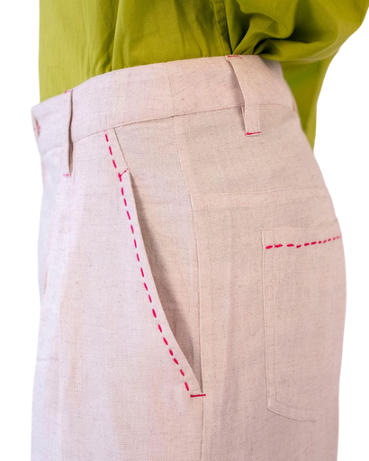
RL-OUT-101
Stato: disponibile in corner Milano Duomo
EUR 89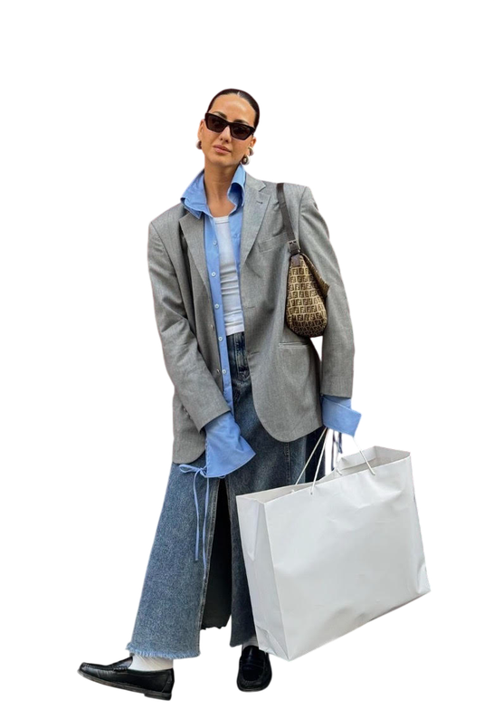
RL-OUT-102
Restyling con bottoni clip modulari
EUR 78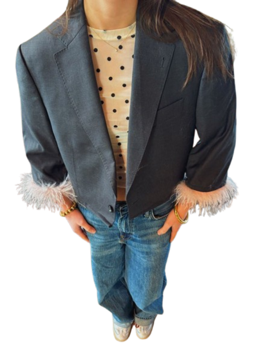
RL-OUT-103
Ciclo completo sanificazione certificata
EUR 96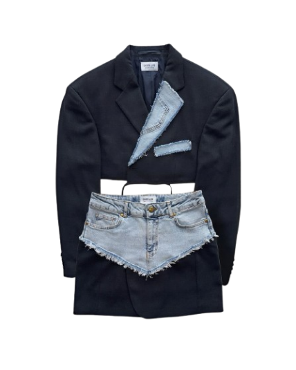
RL-OUT-104
Pezzo unico con etichetta patch recuperata
EUR 83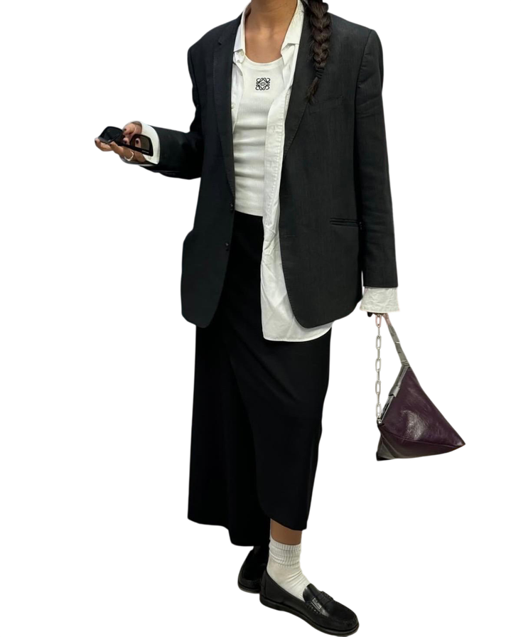
RL-OUT-105
Linea istituzionale della collezione 2026
EUR 91Catalogo demo
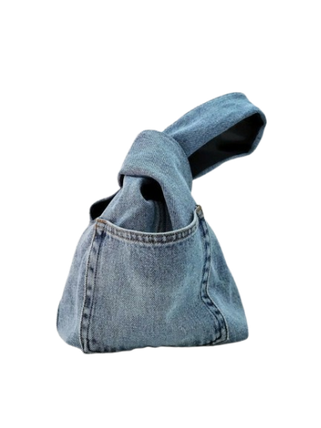
RL-DNM-201
Fit aggiornato su base vintage originale
EUR 45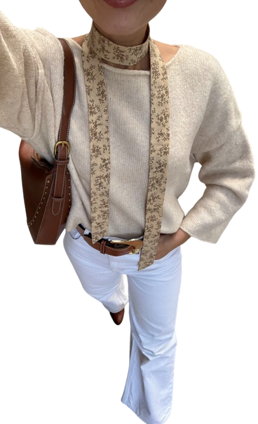
RL-DNM-202
Recupero filato e ricondizionamento completo
EUR 42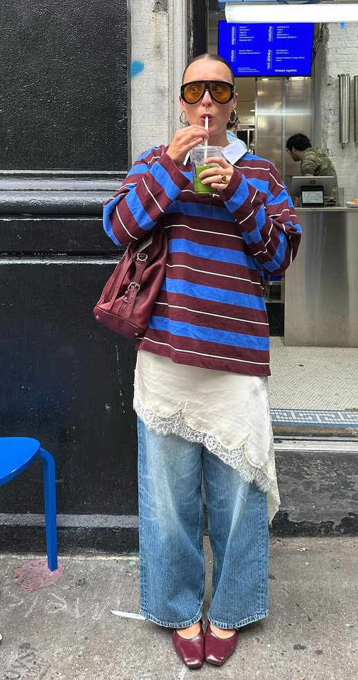
RL-DNM-203
Palette neutra, styling urban essenziale
EUR 48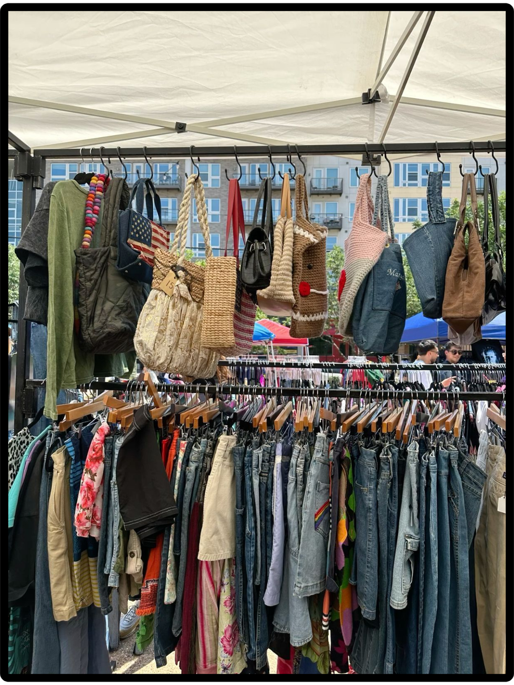
RL-DNM-204
Impunture a vista in tono identitario Re-Love
EUR 54RL-DNM-205
Proposta capsule per uso quotidiano
EUR 44Contenuti dalla presentazione
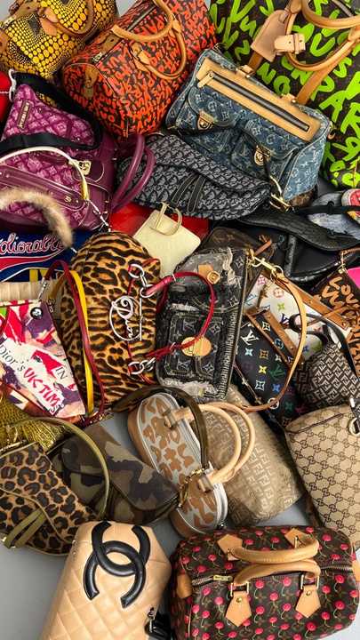
Un atto alternativo al fast fashion: estetica di tendenza e tutela del pianeta devono coesistere.
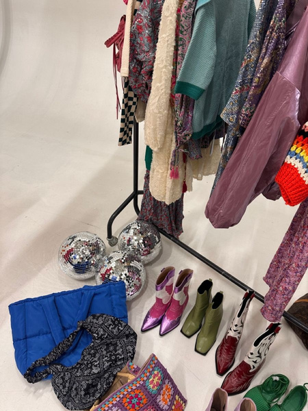
Focus su qualita, tempistiche e controllo dei costi di lavorazione per mantenere competitivita.
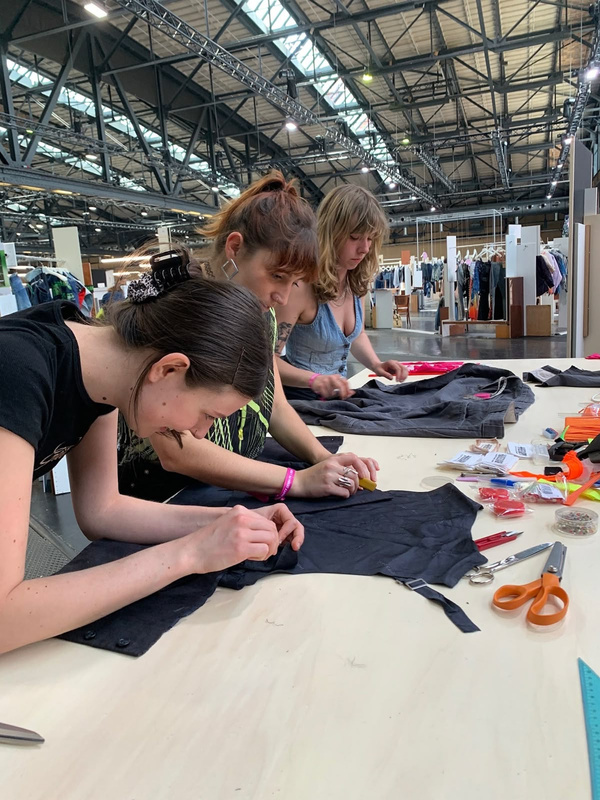
Digital first, storytelling del capo e monitoraggio del percorso post-donazione nell'applicazione.